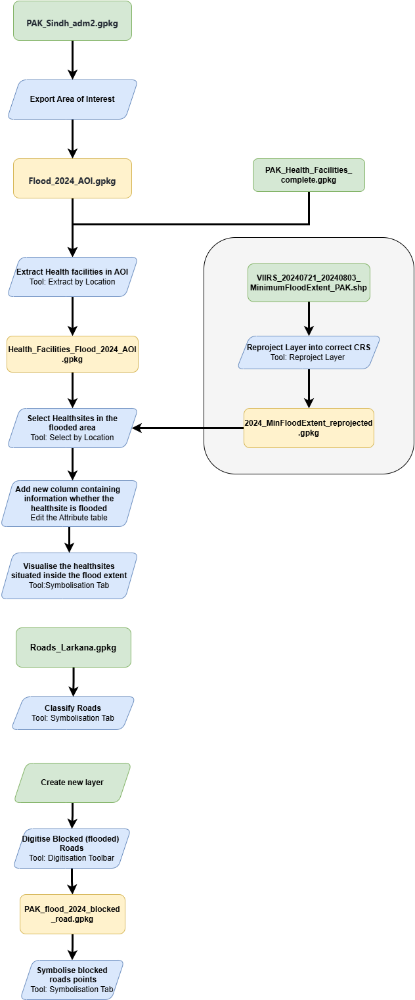
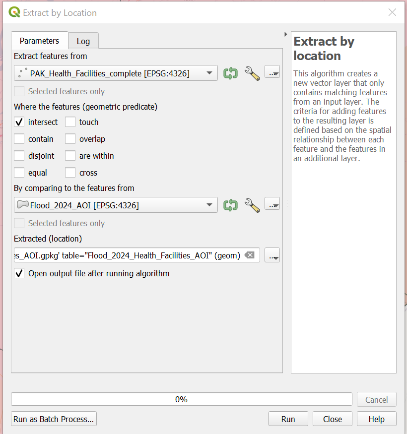
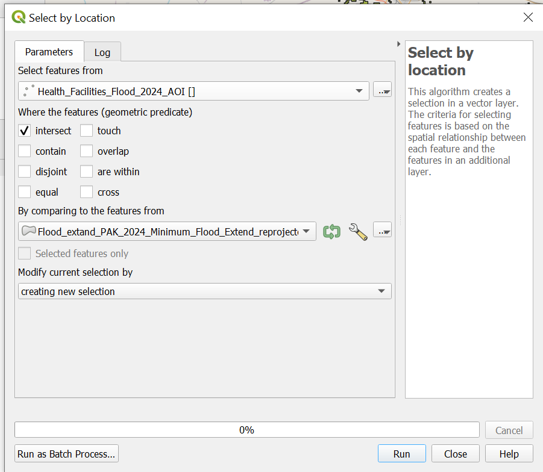
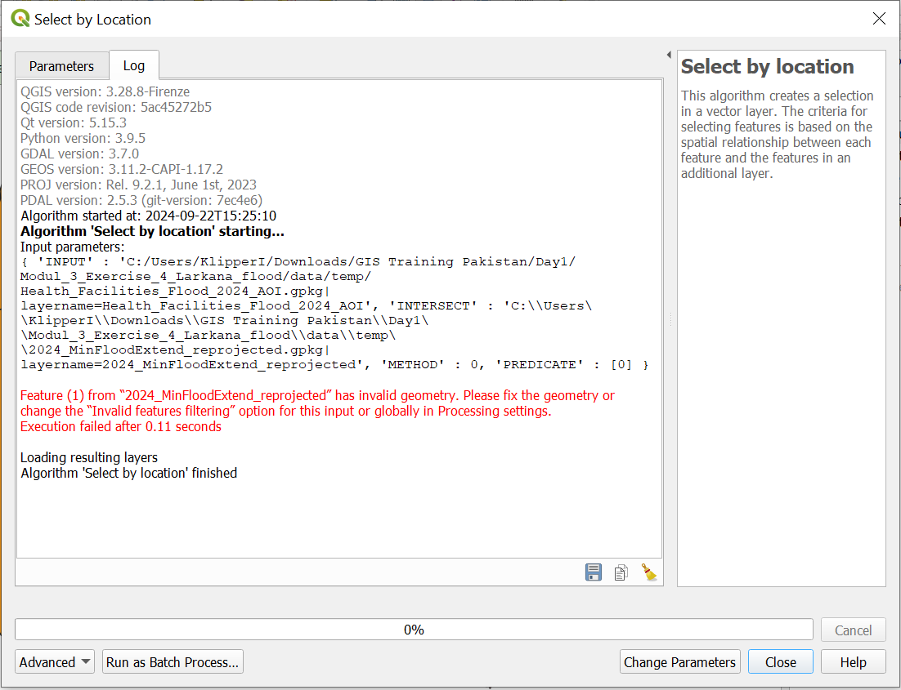
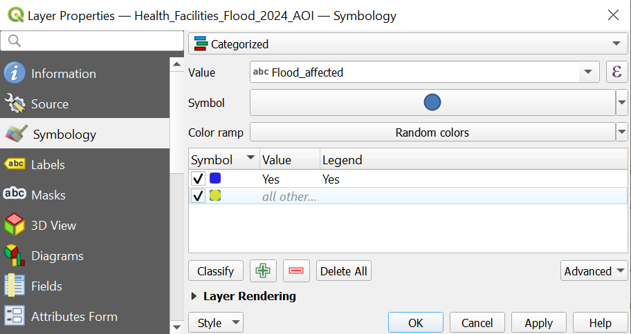
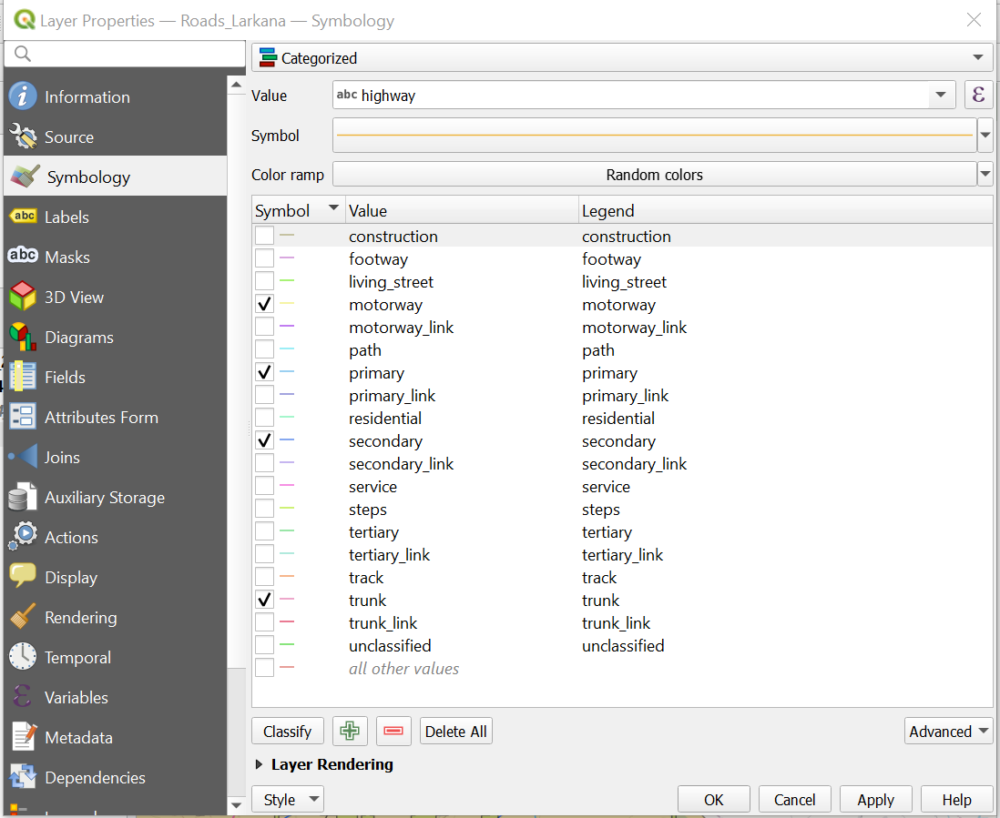
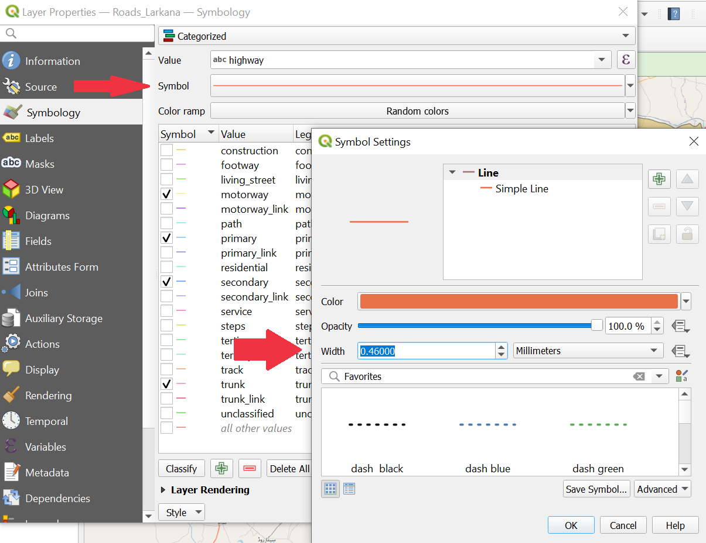
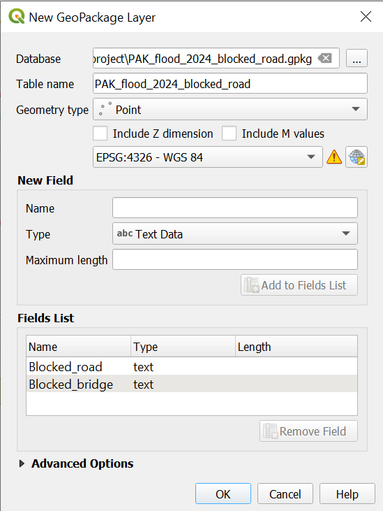
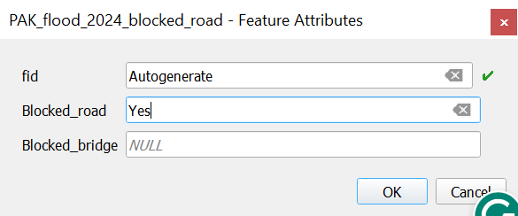
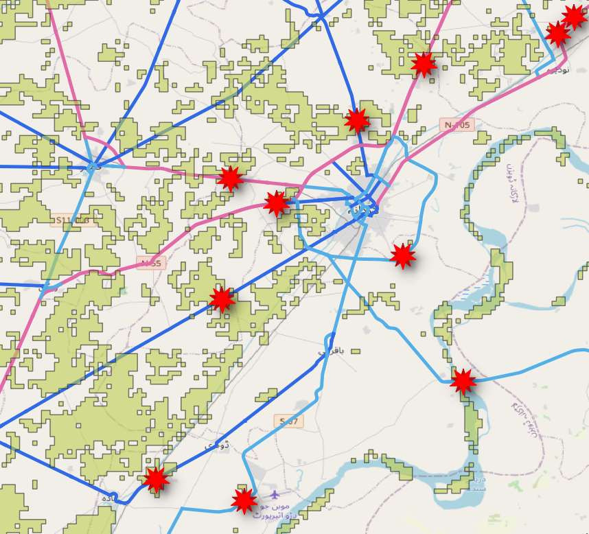

Exercise 5: Larkana Flood response#
Competences covered in this exercise
Select features and export to new file
Extract by Location
Reproject Layer
Editing the Attribute Table
Classification
Digitising a point Layer
Estimated time demand for the exercise
The exercise takes around 3 hours to complete, depending on the number of participants and their familiarity with computer systems.
Relevant wiki articles and module chapters
Instructions for the trainers#
Trainers Corner
Prepare the training
Take the time to familiarise yourself with the exercise and the provided material.
Prepare a white-board. It can be either a physical whiteboard, a flip-chart, or a digital whiteboard (e.g. Miro board) where the participants can add their findings and questions.
Before starting the exercise, make sure everybody has installed QGIS and has downloaded and unzipped the data folder.
Check out How to do trainings? for some general tips on training conduction
Conduct the training
Introduction:
Introduce the idea and aim of the exercise.
Provide the download link and make sure everybody has unzipped the folder before beginning the tasks.
Follow-along:
Show and explain each step yourself at least twice and slow enough so everybody can see what you are doing, and follow along in their own QGIS-project.
Make sure that everybody is following along and doing the steps themselves by periodically asking if anybody needs help or if everybody is still following.
Be open and patient to every question or problem that might come up. Your participants are essentially multitasking by paying attention to your instructions and orienting themselves in their own QGIS-project.
Wrap up:
Leave time for any issues or questions concerning the tasks at the end of the exercise.
Leave some time for open questions.
Available Data#
Download all datasets here and save the folder on your computer and unzip the file.
Dataset |
Original title |
Publisher |
Downloaded from |
|---|---|---|---|
PAK_Sindh_adm1.gpkg |
UN OCHA |
HDX |
|
PAK_Sindh_adm2.gpkg |
UN OCHA |
HDX |
|
PAK_Sind_Health_Facilities.gpkg |
Humanitarian OpenStreetMap Team (HOT) |
HDX |
|
VIIRS_20240721_20240803_MinimumFloodExtent_PAK.shp |
Satellite detected water extents from 08 to 12 August 2024 over Pakistan) |
UNO SAT |
HDX |
Roads_Larkana.gpkg |
Humanitarian OpenStreetMap Team |
HOT Export Tool (Export created in September 2024) |
Hint
Reprojected and fixed Flood extend layer can be downloaded here
Hint
Folder structure To keep your data organized and easily accessible, it’s important to establish a clear folder structure on your computer for your QGIS projects and geodata. Ensure that your exercise data are saved in a location that allows for easy retrieval and association with the corresponding QGIS project.
{kind=link}

Task 1: Gain an overview of the situation around Larkana#
Context
You have been deployed as an information manager to the flood-affected regions of Pakistan. Upon your arrival you received reports from the operations team indicating that the city of Larkana and its surrounding areas have been severely affected by the floods. The team needs a general overview of the location of the city.
Open QGIS and create a new project by clicking on
Project->NewOnce the project is created save the project in the “project” folder of the exercise “Modul3_Exercise_2_Flood_Larkana”. To do that click on
Project->Save asand navigate to the folder. Name the project “PAK_Larkana_flood_2024”.First, we want to add the OpenStreetMap as a base map for orientation. To add the OSM as a base map click on
Layer->Add Layer->Add XYZ Layer…. ChooseOpenStreetMapand clickAdd.Next, load the GeoPackage “PAK_Sindh_adm2.gpkg” in your project by drag and drop (Wiki Video). Or click on
Layer->Add Layer->Add Vector Layer. Click on the three points and navigate to “PAK_Sindh_adm2.gpkg”. Select the file and click
and navigate to “PAK_Sindh_adm2.gpkg”. Select the file and click Open. Back in QGIS clickAdd(Wiki Video).
Attention
GeoPackage files can contain multiple files and even entire QGIS projects. When you load such a file in QGIS a window will appear in which you have to select the files you want to load in your QGIS project.
First, we want to export Larkana District and the neighbouring districts Kambar Shahdad Kot, Shikarpur and Sukkur from PAK_adm2_Sindh to have it as a stand-alone vector layer. To do that:
Open the attribute table of PAK_adm2_Sindh by right click on the layer ->
Open Attribute Table(Wiki Video).Find the row of Larkana and mark it by clicking on the number on the very left-hand side of the attribute table. The row will appear blue and the area of Larkana will turn yellow on the map canvas. You can right-click on the row and click
Zoom to Feature(Wiki Video). To select the surrounding districts, click on theSelect Feature(s) icon in the QGIS Toolbar, hold the
icon in the QGIS Toolbar, hold the Shiftbutton on your keyboard, and click on the districts either on the map or the attribute table (Wiki Video).After you are done selecting districts, click on the icon
 to end the feature selection mode.
to end the feature selection mode.Now right-click on the layer in the Layer Panel and click on
Export->Save Selected Features as. We want to save the selected districts as a GeoPackage, so choose theFormatoption accordingly. Click on the three points and navigate to yourtempfolder. Here you can give it the layer the name “Flood_2024_AOI” and clickSave. Now you should see the same name in theLayer namefield. Clickok(Wiki Video)Click on the icon in the toolbar to end the feature selection.
Task 2: Estimation of Flood Impact on the Health Sector in Larkana#
The first thing to do is to find out where the health facilities are located in the area. To do that, you do a quick search on HDX. You find the dataset Pakistan Health Facilities (OpenStreetMap Export). This will do for now.
Load the GeoPackage “PAK_Health_Facilities_complete.gpkg” in your project by drag and drop (Wiki Video). Or click on
Layer->Add Layer->Add Vector Layer. Click on the three points and navigate to “PAK_Sindh_adm2.gpkg”. Select the file and click Open. Back in QGIS clickAdd(Wiki Video).First, we must extract the health facilities in our area of interest. We will use the tool “Extract by Location” to do that.
Open the
Processing Toolbox(here is how) and search for the tool.As
Input Layerwe will use “PAK_Health_Facilities_complete”.For
By comparing to the features fromwe use the layer “Flood_2024_AOI”.As
Geometric predicatewe useintersect.To save the output click on the three points at
Extract (location)->Save to GeoPackageand navigate to yourtempfolder. Save the new layer under the name “Health_Facilities_Flood_2024_AOI”. Give the new layer the sameLayer nameand clickRun.
Open the Attribute table of the new layer and have a look.
First, we must extract the health facilities in our area of interest. We will use the tool “Extract by Location” to do that.
Open the
Processing Toolbox(here is how) and search for the tool.As
Input Layerwe will use “PAK_Health_Facilities_complete”.For
By comparing to the features fromwe use the layer “Flood_2024_AOI”.As
Geometric predicatewe useintersect.To save the output click on the three points at
Extract (location)->Save to GeoPackageand navigate to yourtempfolder. Save the new layer under the name “Health_Facilities_Flood_2024_AOI”. Give the new layer the sameLayer nameand clickRun.
Open the Attribute table of the new layer and have a look.
{kind=link}

Extract by location Pakistan#
Ok, now we have a good overview of the location of health facilities. We need much better information about the flooded area to identify the health facilities impacted by the flood. Fortunately, the UN has just shared a dataset about the extent of floods. Satellite detected water extents from 08 to 12 August 2024 over Pakistan.
Load the dataset “VIIRS_20240721_20240803_MinimumFloodExtent_PAK.shp” into your QGIS.
Once you have loaded the layers in QGIS, you can see that they are correctly displayed. However, upon checking the layer information, you can see that the new layers have a different Coordinate Reference System (CRS). They have the EPSG Code 9707 whereas our project has 4326 (Wiki Video).
Right click on the data layer, click on “Properties”.
The “Layer Properties” Window of the data layer will open. Click on “Information”.
Under the headline “Coordinate Reference System (CRS)” you find all information about the CRS. The most important are:
Name: Here you find the EPSG Code.
Unites: Here you can find whether it is possible to use meters with this data layer, degrees or latitude and longitude.
This will be a problem as soon as we do something different then just displaying the layers. Since we want to manipulate the layers in the next step we need to reproject them first (Wiki Video).
Click on the
Vectortab ->Data Management Tools->Reproject Layeror search for the tool in theProcessing Toolbox.As
Input layerselect “VIIRS_20240721_20240803_MinimumFloodExtent_PAK.shp”Select as target CRS/ EPSG-Code 4326.
Save the new file in your
tempfolder by clicking on the three dots next to Reprojected, specify the file name as “2024_MinFloodExtend_reprojected”.Click
RunDelete the old layer from the layer panel by right click on the layer ->
Remove layer.Adjust the opacity of the flood layer by right-clicking on layer “2024_MinFloodExtend_reprojected” in the Layer Panel and click on
Properties. A new window will open up with a vertical tab section on the left. Navigate to theSymbologytab. Adjusted the opacity to around 60 % by moving the slider.
We have observed that certain health facilities have been impacted by the flood. In order to visualise this information on the map, we plan to include a new attribute called “affected” in the attribute table of “Health_Facilities_Flood_2024_AOI”. To accomplish this, our first step will involve selecting all the affected health facilities. A new column containing this information is then appended to the “Health_Facilities_Flood_2024_AOI” attribute table.
Open the
Processing Toolbox(here is how) and search for the tool “Select by Location”.Select features from= “Health_Facilities_Flood_2024_AOI”.As
Geometric predicatewe useintersect.For
By comparing to the features fromwe use the layer “2024_MinFloodExtent_reprojected”.Modify current selection by=creating new selection.Click
Run.
{kind=link}

Select flood affected health facilities#
Possible Error Message
In case you encounter the error:
Feature (1) from “2024_MinFloodExtend_reprojected” has invalid geometry. Please fix the geometry or change the Processing setting to the “Ignore invalid input features” option. Execution failed after 0.07 seconds
You need to first use the tool “Fix Geometry” before repeating the previously failed step 5 of using the tool “Select by Location”.
To do so open the
Processing Toolboxand search for the tool “Fix Geometries”.Input layer=2024_MinFloodExtend_reprojectedSave the new file in your
tempfolder by clicking on the three dots, specify the file name as “2024_MinFloodExtend_reprojected_fix”.Click
Run.
{kind=link}

The error message indicating invalid geometries#
Open the attribute table of “Health_Facilities_Flood_2024_AOI” by right click on the layer ->
Open Attribute Table(Wiki Video) and activate the editing mode by clicking on (Wiki Video). Now you are able to edit the data directly in the table.
(Wiki Video). Now you are able to edit the data directly in the table.First, we add a new column with the name “Flood_affected”. To do so, click on
 . In the
. In the Add fieldwindow, you have to add the name and set theTypetoText(string). ClickOK(Wiki Video)

Add new column#
Now look for the
Show all Featuresoption in the lower left corner and click on it. Then, select the optionShow selected features(Wiki Video). This will filter the table to display only the rows that represent the health facilities directly impacted by the flood. Now, you can writeYesin the “Flood_affected” column.
When you are done, click
 to save your edits and switch off the editing mode by again clicking on (Wiki Video).
to save your edits and switch off the editing mode by again clicking on (Wiki Video).Click on the icon in the toolbar to end the feature selection.
To visualise the enriched data set, we use the function “Categorized Classification” function. This means that we select a column from the attribute table and use the content as categories to sort and display the data (Wiki Video).
Right-click on the layer “Health_Facilities_Flood_2024_AOI” in the Layer Panel and click on
Properties. A new window will open up with a vertical tab section on the left. Navigate to theSymbologytab.On the top you find a dropdown menu. Open it and choose
Categorized. UnderValueselect “Flood_affacted”.Further down the window, click on
Classify. Now you should see all unique values or attributes of the selected “Flood_affacted” column. You can adjust the colours by double-clicking on each colour in the central field. Once you are done, clickApplyandOKto close the symbology window.
{kind=link}

Flood affected health facilities classification#
Achievement:
We’ve pinpointed the specific health facilities that have been inundated by the floods. Our findings indicate that a total of four facilities have been completely flooded and are currently non-operational. Considering we assessed the minimum flood impact, it’s highly probable that more health facilities will also be impacted. This data is crucial for our operational team as it will enable them to strategize and execute an effective response.
Task 3: Logistical access to Larkana City#
Load the dataset “Roads_Larkana.gpkg” from your input folder into your QGIS.
For categorized classification right-click on the layer “Roads_Larkana” in the Layer Panel and click on
Properties. A new window will open up with a vertical tab section on the left. Navigate to theSymbologytab (Wiki Video).On the top you find a dropdown menu. Open it and choose
Categorized. UnderValueselect “highway”.Further down the window, click on
Classify. Now you should see all unique values or attributes of the selected “highway” column. You can adjust the colours by double-clicking on the colours in each row in the central field.Remove the tick from all categories except:
motorway,primary,secondary,trunk

The symbolisation window for the Roads_Larkana.gpkg layer.#
You have the option to customize the width of the main roads’ lines to improve the visualization. Open the Symbology window, then select
Symbol. In the new window, you can adjust the width of the lines to your preference.

Adjusting the symbolisation of the different road types#
Once you are done, click
ApplyandOKto close the symbology window.
{kind=link}
{kind=link}
To simplify the process, we will visually search for blocked roads and mark them with points. For this purpose, we will create an entirely new point dataset representing blocked roads.
Click on
Layer–>Create Layer->New GeoPackage Layer(Wiki Video)
Under
Databaseclick on and navigate to tempfolder. Give the new dataset the name “PAK_flood_2024_blocked_road”. ClickSave.Geometry type: SelectPointUnder
Additional dimensionyou should always make sure that you checkNone.Select the coordinate reference system (CRS) “EPSG:4326-WGS 84”. By default, QGIS selects the project CRS.
Under
New Fieldyou can add columns to the new layer. Add the column “Blocked_road”.Name= “Blocked_road”Type: SelectText DataClick on
Add to Fields List to add the new column to the Fields List.Create another field with the
name“Blocked_bridge” and theType: SelectText Data.Click
OK.
Your new layer will appear in the
Layer Panel

Creating a new point layer. Make sure to specify a location using the three points at the top.#
{kind=link}
Now you can create a point for each place where the flood layer covers the main roads leading out of Larkana wiki.
Currently the new layer “PAK_flood_2024_blocked_road” is empty. To add features we can use the
Digitizing Toolbar.
Activate the editing mode by clicking on
. Next, activate the option to add new points by clicking on 
Add Point Feature.Look out for places where the flood layer covers the main roads or bridges leading out of Larkana. Once you have found one, left-click on the location you want to digitise.
Once you click on a place, a window will appear. Indicate that the road is blocked by writing
Yesin the fieldBlocked_road.Repeat this step with all the locations your can find.

This pop-up will open once you have selected a location to add a point. Make sure to enter the relevant information in the columns.#
Once you are done with digitizing click on
to save your edits.Click again on
to end the editing mode.
Now, we have mapped all blocked main access roads into Larkana. We can use icons instead of just points to display the layer “PAK_flood_2024_blocked_road” to visualise this fact better wiki.
Right-click on the layer “PAK_flood_2024_blocked_road” in the Layer Panel and click on
Properties. A new window will open up with a vertical tab section on the left. Navigate to theSymbologytab.Keep the
Single Symboloption. Select any symbol from the list that is appropriate for marking blocked roads.Once you are done, click
ApplyandOKto close the symbology window.After you are done, click on the icon
to end the feature selection mode.

Adjusting the symbolisation for the new point layer. Make sure to choose a marker that can be easily identified.#
{kind=link}
Part of your assignment was to point out possible alternatives to road transport. Can you identify any?
Answer
In the south-west of Larkan City, you can find the Mohenjodaro Airport. Currently, the road from Larkana City to the airport appears to be open and accessible. This means that essential supplies could potentially be transported from the airport into the city without encountering any roadblocks.
{kind=link}

Road access to Mohenjodaro Airport#
The operations team has now all the information they need to plan their logistics. Good Job!
Continue along this exercise track
{kind=link}
This exercise is part of the Larkana Flood Response Exercise track and continues with an exercise in module 4.
Click here if you want to continue to the next exercise of this exercise track.